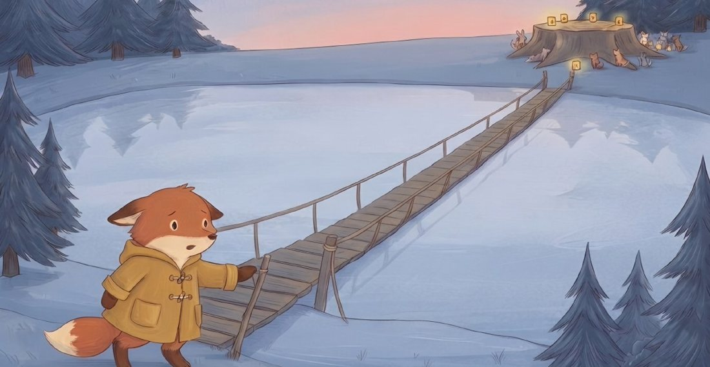

Bobbin’s Big Feelings
Bobbin the fox and her friends have lots of feelings in their five stories. Can you match each moment to a feeling?
One toe, then the next.
How do they feel?
Draw a line from each moment to a feeling word.
Bobbin gets frogs in her tummy at the Wobble Bridge.
sad
In A Kite Called Flap, Bobbin’s tail goes THUMP!
brave
Flap the kite flies away and is gone.
worried
Dabble has a blue marble, and Bobbin feels all squished up inside.
cross
Little Tilly says, “I want to do it with my own feet!”
jealous
Draw Bobbin’s face
worried
cross
sad
jealous
brave
For grown-ups: there are no wrong answers. Talk about how you can tell what Bobbin feels: her ears, her tail, her tummy. Answers: frogs in her tummy = worried; tail goes THUMP = cross; kite flies away = sad; squished up = jealous; Tilly = brave.
Free printable from tarkasatales.com · Goes with Bobbin and the Wobble Bridge© 2026 Saurabh Vig · Free for home & classroom use